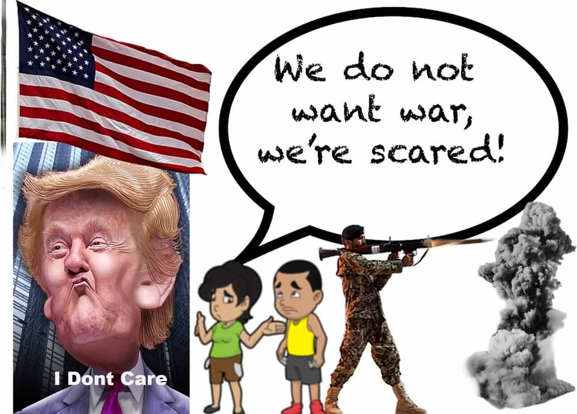

I wanted to illustrate the most recent and dangerous issue that came up. Trump's declaration on war. This affects all Americans in different ways. They are no longer just scared for themselves; for their future, family, and friends. For instance my sister is a officer in the navy which is scary because what if it gets to the point where she has to go to war, she's putting herself at risk. Or for instance myself with my family. I have a daughter so naturally i think about what will happen to her if we were to get attacked. It's insane to think that we are in these situations because for the past few years America has become a nation not for all but for the government. It no longer listens to its people.
For my photomontage I put an image of trump and the american flag big to represent his position. I also added a man and a woman representing the public speaking up to trump but him saying “i don't care” to them because he started the war regardless. I blurred the people trying to emphasize how the people aren't being heard but rather shunned away. Then on the right i have a soldier having to shoot a missile without any say. Creating these photoshops is sort of like riding a bike. At first I'm really slow to learn because I need to find different buttons and understand what they do but after i get the hang of it i started doing it faster and it makes me happy, because I know I am im learning.
Index page